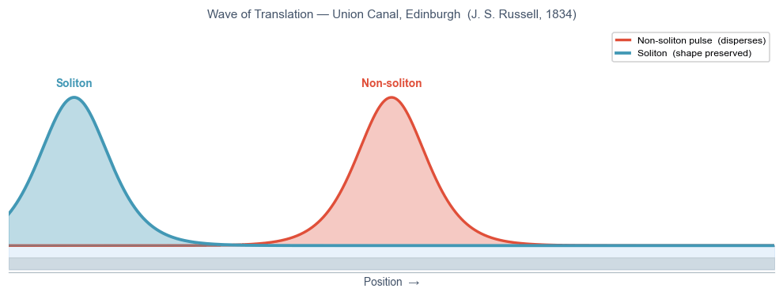

Blue: soliton — sech² shape preserved indefinitely. Orange: non-soliton pulse — same initial shape, disperses at the same group velocity.
"I was observing the motion of a boat which was rapidly drawn along a narrow channel by a pair of horses, when the boat suddenly stopped — not so the mass of water in the channel which it had put in motion; it accumulated round the prow of the vessel in a state of violent agitation, then suddenly leaving it behind, rolled forward with great velocity… I followed it on horseback, and overtook it still rolling on at a rate of some eight or nine miles an hour, preserving its original figure some thirty feet long and a foot to a foot and a half in height."— John Scott Russell, Union Canal, Edinburgh, August 1834